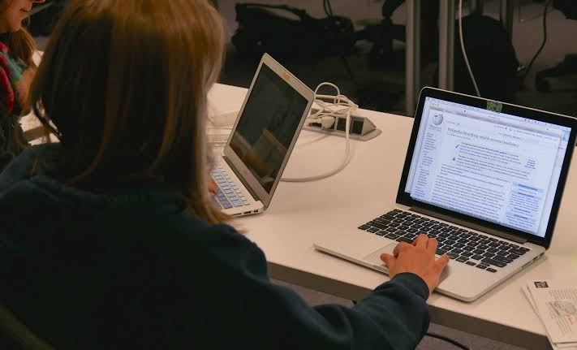

¡Bienvenidos al CECyTEM Plantel La Paz!
¡Prepárate hoy para transformar tu futuro! Aquí comenzará tu camino hacia el éxito profesional y personal.
Somos el Colegio de Estudios Científicos y Tecnológicos del Estado de México, Plantel La Paz. Una institución pública de educación media superior comprometida con la formación integral de jóvenes, ofreciendo un bachillerato tecnológico de calidad que combina conocimientos académicos con habilidades técnicas.
Al estudiar con nosotros, obtienes tu certificado de bachillerato y un título de técnico profesional con validez oficial. Contamos con docentes especializados, talleres y laboratorios equipados, programas de becas, actividades culturales, deportivas y una formación basada en valores como el respeto, la responsabilidad y la excelencia. ¡Tu futuro comienza aquí!
Fomentamos el desarrollo de habilidades tecnológicas, el pensamiento crítico, la creatividad y el trabajo en equipo. Nuestros egresados pueden incorporarse directamente al mercado laboral o continuar con estudios de nivel superior.

Actualmente ofrecemos las siguientes especialidades técnicas:
Durante tu estancia en el plantel tendrás la oportunidad de:

La tecnología cambia constantemente y nosotros te preparamos para liderar ese cambio. Nuestra formación te permite desarrollar competencias digitales que son altamente valoradas en el mundo laboral actual. ¡Sé parte de la transformación digital y construye las soluciones del mañana!
Conoce más sobre nosotros y nuestro proceso de admisión: